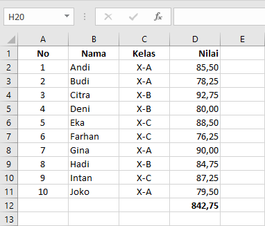
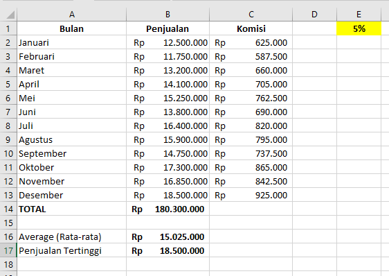
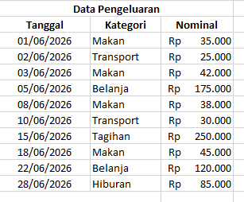
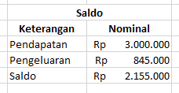
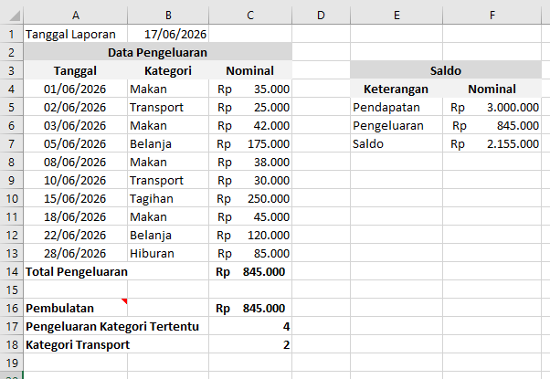
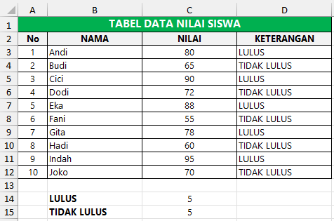
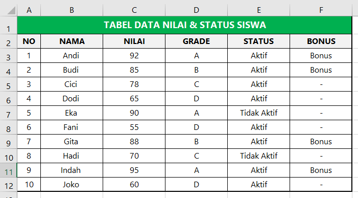
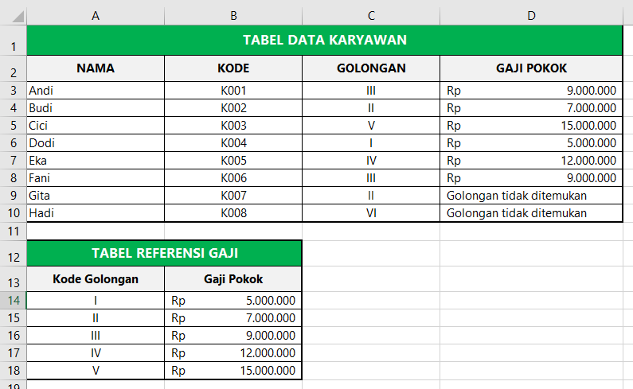

Materi Lengkap
Praktik:
-
Dasar: Buat tabel
data siswa 10 baris (Nama, Kelas, Nilai). Gunakan AutoFill
untuk no urut. Format kolom Nilai dengan Number 2 desimal.
Hitung total nilai dengan
=SUM(D2:D11).Langkah Pengerjaan-
Buat judul kolom:
- A1: No
- B1: Nama
- C1: Kelas
- D1: Nilai
-
Isi nomor urut:
- Ketik 1 pada A2.
- Ketik 2 pada A3.
- Blok A2:A3 lalu tarik AutoFill Handle (kotak kecil di pojok kanan bawah sel) hingga A11.
- Masukkan data siswa pada kolom Nama, Kelas, dan Nilai.
-
Format kolom Nilai menjadi 2 angka
desimal:
- Blok D2:D11.
- Klik tab Home → grup Number.
- Pilih Number.
- Atur Decimal Places menjadi 2.
-
Hitung total nilai:
- Pada sel D12 ketik: =SUM(D2:D11)
- Tekan Enter.
Dengan data di atas, hasilnya: 842,75
Hasil Akhir:

-
Buat judul kolom:
-
Menengah: Buat tabel
penjualan 12 bulan. Hitung total tahunan
=SUM(B2:B13), rata-rata=AVERAGE(B2:B13), tertinggi=MAX(B2:B13). Komisi=B2*$C$1(absolut). Format currency.Kompetensi yang Dipelajari:- AutoFill data bulanan.
- Fungsi `SUM()`.
- Fungsi `AVERAGE()`.
- Fungsi `MAX()`.
- Referensi absolut `$C$1`.
- Format mata uang (Currency/Accounting).
- Menyalin rumus dengan Fill Handle.
Tabel Penjualan Tahunan

Menghitung Total Penjualan Tahunan
Pada sel B14: =SUM(B2:B13)
Hasil: 180300000 atau Rp 180.300.000 setelah diformat Currency.Menghitung Rata-rata Penjualan
Pada sel B16: =AVERAGE(B2:B13)
Hasil: 15025000 atau Rp 15.025.000Mencari Penjualan Tertinggi
Pada sel B17: =MAX(B2:B13)
Hasil: 18500000 atau Rp 18.500.000Menghitung Komisi (Referensi Absolut)Format Currency
Tambahkan kolom Komisi pada kolom E (lihat di gambar).
Pada sel C2 ketik: =B2*$C$1
Lalu salin ke bawah hingga C13.
Mengapa menggunakan `$C$1`?
Tanda `$` membuat referensi menjadi absolut, sehingga saat rumus disalin ke bawah, Excel
tetap mengambil nilai komisi dari sel E1.
Contoh:
=B3*$C$1
=B4*$C$1
=B5*$C$1- Blok sel B2:C13.
- Tab Home → grup Number.
- Pilih Currency atau Accounting.
- Pilih simbol Rp (Indonesian Rupiah).
- Atur jumlah desimal sesuai kebutuhan (biasanya 0 atau 2).
-
Lanjutan: Buat
laporan keuangan pribadi 1 bulan. Gunakan
=ROUNDuntuk pembulatan,=TODAY()untuk tanggal otomatis,=COUNTIFuntuk menghitung kategori pengeluaran. Terapkan Conditional Formatting untuk sel negatif (merah).Tujuan
Murid dapat menggunakan:
- Fungsi TODAY()
- Fungsi ROUND()
- Fungsi COUNTIF()
- Conditional Formatting
- Format Currency
Langkah pengerjaan:
-
Membuat Tabel Laporan Keuangan
Pada sel A1: Tanggal Laporan
Pada sel B1 ketik rumus: =TODAY()
Hasil akan menampilkan tanggal hari ini secara otomatis.
Formatkan sebagai Short Date- Pada Tab Home di bagian group Number
- Pilih Short Date

-
Total Pengeluaran
Pada sel C14: =SUM(C4:C13) -
Pembulatan dengan ROUND
Misalkan hasil total berada di C16.
Pada C16: =ROUND(C14;-3)
Artinya: Dibulatkan ke ribuan terdekat.
Contoh:
845,600 → 846,000
842,100 → 842,000 -
Menghitung Jumlah Pengeluaran Kategori
Tertentu
Jumlah transaksi kategori Makan
Pada F2: =COUNTIF(B4:B13;"Makan")
Hasil: 4Jumlah transaksi kategori Transport
Pada F3: =COUNTIF(B4:B13;"Transport")
Hasil: 2 - Membuat Saldo

Rumus saldo: =F5-F6
Pengeluaran diambil dari Total Pengeluaran: =C14 -
Conditional Formatting untuk Nilai Negatif
Misalnya saldo berada pada F7.- Pilih sel F7.
- Tab Home → Conditional Formatting.
- Pilih Highlight Cells Rules.
- Pilih Less Than.
- Isi: 0
- Pilih format Light Red Fill with Dark Red Text.
- Klik OK.
Laporan KeuanganJika saldo: -250.000 maka sel akan otomatis berwarna merah.

Jika saldo: 500.000 maka tetap normal.
Praktik:
-
Dasar: Buat tabel
nilai 10 siswa. Gunakan
=IF(B2>=75,"LULUS","TIDAK LULUS"). Hitung jumlah lulus dengan=COUNTIF.Kompetensi yang Dipelajari:- Fungsi
IF()untuk menentukan kelulusan. - Fungsi
COUNTIF()untuk menghitung jumlah lulus. - Referensi relatif sel.
- Menyalin rumus dengan Fill Handle.
Tabel Data Nilai Siswa

Langkah Pengerjaan:-
Buat judul kolom:
- A1: No
- B1: Nama
- C1: Nilai
- D1: Keterangan
- Isi nomor urut (A2:A11): AutoFill seperti pertemuan sebelumnya.
-
Masukkan data nama dan nilai 10 siswa pada kolom B dan C.
Contoh data:- Andi — 80
- Budi — 65
- Cici — 90
- Dodi — 72
- Eka — 88
- Fani — 55
- Gita — 78
- Hadi — 60
- Indah — 95
- Joko — 70
-
Tentukan kelulusan dengan IF:
- Pada sel D2 ketik:
=IF(C2>=75,"LULUS","TIDAK LULUS") - Tekan Enter, maka akan muncul hasil "LULUS" jika nilai ≥ 75, atau "TIDAK LULUS" jika kurang.
- Salin rumus ke bawah hingga D11 menggunakan Fill Handle.
- Pada sel D2 ketik:
-
Hitung jumlah siswa lulus:
- Pada sel D13 ketik:
=COUNTIF(D2:D11,"LULUS") - Tekan Enter.
- Pada sel D13 ketik:
-
Hitung jumlah siswa tidak lulus:
- Pada sel D14 ketik:
=COUNTIF(D2:D11,"TIDAK LULUS") - Tekan Enter.
- Pada sel D14 ketik:
Penjelasan Rumus:=IF(C2>=75,"LULUS","TIDAK LULUS")— Jika nilai di C2 ≥ 75, tampilkan "LULUS", jika tidak tampilkan "TIDAK LULUS".=COUNTIF(D2:D11,"LULUS")— Hitung berapa banyak sel dalam range D2:D11 yang berisi teks "LULUS".
- Fungsi
-
Menengah: Buat
nested IF untuk grade:
=IF(B2>=90,"A",IF(B2>=80,"B",IF(B2>=70,"C","D"))). Gabungkan dengan AND untuk bonus:=IF(AND(B2>=80,C2="Aktif"),"Bonus","-").Kompetensi yang Dipelajari:- Fungsi
IF()bersarang (nested IF). - Fungsi
AND()untuk kondisi ganda. - Kombinasi
IF+AND. - Menyalin rumus dengan Fill Handle.
Tabel Data Nilai & Status Siswa

Langkah Pengerjaan:-
Buat judul kolom:
- A1: No
- B1: Nama
- C1: Nilai
- D1: Grade
- E1: Status
- F1: Bonus
-
Isi data 10 siswa (Nama, Nilai, Status).
Contoh:- Andi — 92 — Aktif
- Budi — 85 — Aktif
- Cici — 78 — Aktif
- Dodi — 65 — Aktif
- Eka — 90 — Tidak Aktif
- Fani — 55 — Aktif
- Gita — 88 — Aktif
- Hadi — 70 — Tidak Aktif
- Indah — 95 — Aktif
- Joko — 60 — Aktif
-
Tentukan Grade dengan Nested IF:
- Pada sel D2 ketik:
=IF(C2>=90,"A",IF(C2>=80,"B",IF(C2>=70,"C","D"))) - Tekan Enter, lalu salin ke bawah hingga D11.
- Pada sel D2 ketik:
-
Tentukan Bonus dengan IF + AND:
- Pada sel F2 ketik:
=IF(AND(C2>=80,E2="Aktif"),"Bonus","-") - Tekan Enter, lalu salin ke bawah hingga F11.
- Pada sel F2 ketik:
Penjelasan Rumus:- Nested IF:
=IF(C2>=90,"A",IF(C2>=80,"B",IF(C2>=70,"C","D")))
→ Jika nilai ≥ 90 → A, jika ≥ 80 → B, jika ≥ 70 → C, selain itu → D. - IF + AND:
=IF(AND(C2>=80,E2="Aktif"),"Bonus","-")
→ Jika nilai ≥ 80 DAN status "Aktif", maka dapat "Bonus", jika tidak tampilkan "-".
Hasil Contoh:- Andi (92, Aktif) → Grade A, Bonus: Bonus
- Eka (90, Tidak Aktif) → Grade A, Bonus: - (karena tidak aktif)
- Fani (55, Aktif) → Grade D, Bonus: - (karena nilai < 80)
- Fungsi
-
Lanjutan: Buat sistem
penggajian: tabel karyawan dengan kode, nama, golongan.
Tabel referensi golongan & gaji. Gunakan
=VLOOKUP(D2,$A$2:$B$10,2,FALSE)untuk mengisi gaji otomatis. Tambahkan IFERROR untuk menangani data tidak ditemukan.Kompetensi yang Dipelajari:- Fungsi
VLOOKUP()untuk mencari data dari tabel referensi. - Fungsi
IFERROR()untuk menangani error. - Referensi absolut
$pada tabel lookup. - Membuat tabel referensi di sheet yang sama.
Contoh Tabel

Langkah Pengerjaan:-
Buat tabel referensi golongan & gaji (misal di sheet "Referensi" atau di kolom I:J):
- I1: Kode Gol, J1: Gaji Pokok
- I2: I, J2: 5000000
- I3: II, J3: 7000000
- I4: III, J4: 9000000
- I5: IV, J5: 12000000
- I6: V, J6: 15000000
-
Buat tabel data karyawan (mulai dari A1):
- A1: Kode, B1: Nama, C1: Golongan, D1: Gaji Pokok
-
Isi data karyawan (contoh 8-10 baris):
- K001 — Andi — III
- K002 — Budi — II
- K003 — Cici — V
- K004 — Dodi — I
- K005 — Eka — IV
- K006 — Fani — III
- K007 — Gita — II (sengaja salah ketik "II" bukan golongan valid) → untuk demo IFERROR
- K008 — Hadi — VI (golongan tidak ada di referensi) → menampilkan error
-
Gunakan VLOOKUP untuk mengisi gaji otomatis:
- Pada sel D2 ketik:
=VLOOKUP(C2,$I$2:$J$6,2,FALSE) - Salin ke bawah hingga D9.
- Perhatikan: data "II" (dengan spasi) dan "VI" akan menghasilkan error
#N/Akarena tidak ditemukan di tabel referensi.
- Pada sel D2 ketik:
-
Tambahkan IFERROR untuk menangani error:
- Ubah rumus di D2 menjadi:
=IFERROR(VLOOKUP(C2,$I$2:$J$6,2,FALSE),"Golongan tidak ditemukan") - Salin ke bawah hingga D9.
- Sekarang data "II" dan "VI" akan menampilkan teks "Golongan tidak ditemukan" bukan error
#N/A.
- Ubah rumus di D2 menjadi:
-
Format Gaji:
- Blok sel D2:D9.
- Tab Home → Number → pilih Currency atau Accounting dengan simbol Rp.
Penjelasan Rumus:- VLOOKUP:
=VLOOKUP(lookup_value, table_array, col_index_num, [range_lookup])
→C2= nilai yang dicari (golongan)
→$I$2:$J$6= tabel referensi (absolut agar tidak berubah saat disalin)
→2= kolom ke-2 dari tabel referensi (Gaji Pokok)
→FALSE= mencari kecocokan tepat (exact match) - IFERROR:
=IFERROR(value, value_if_error)
→ Jika VLOOKUP menghasilkan error (#N/A), tampilkan teks "Golongan tidak ditemukan".
Tips:- Selalu gunakan
FALSEpada VLOOKUP untuk pencarian exact match, terutama untuk kode/golongan. - Gunakan referensi absolut
$pada tabel referensi agar tidak bergeser saat rumus disalin. - IFERROR sangat berguna untuk membuat laporan yang rapi tanpa menampilkan error.
- Fungsi
Praktik:
-
Dasar: Buat Column
chart penjualan 6 bulan. Tambahkan judul, label sumbu, dan
data label. Ubah warna kolom menjadi biru gradasi.
Kompetensi yang Dipelajari:
- Membuat Column chart dari data tabel.
- Menambahkan judul chart, label sumbu, dan data label.
- Mengubah warna dan gaya chart.
- Memformat chart agar profesional.
Tabel Data Penjualan 6 Bulan
 Langkah Pengerjaan:
Langkah Pengerjaan:-
Buat tabel data:
- A1: Bulan, B1: Penjualan
- A2:A7: Jan, Feb, Mar, Apr, Mei, Jun
- B2:B7: 12000000, 15000000, 11000000, 18000000, 14000000, 16000000
- Blok data A1:B7.
-
Insert Column Chart:
- Tab Insert → grup Charts → pilih Clustered Column (kolom pertama).
- Chart akan langsung muncul di sheet.
-
Tambahkan judul chart:
- Klik judul chart (default: "Chart Title").
- Ketik: "Penjualan 6 Bulan Pertama".
-
Tambahkan label sumbu:
- Klik chart → Chart Design → Add Chart Element.
- Pilih Axis Titles → Primary Horizontal → ketik: Bulan.
- Pilih Axis Titles → Primary Vertical → ketik: Nominal (Rp).
-
Tambahkan Data Label:
- Klik chart → Chart Design → Add Chart Element.
- Pilih Data Labels → Outside End.
-
Ubah warna kolom menjadi biru gradasi:
- Klik salah satu kolom (semua kolom akan terseleksi).
- Klik kanan → pilih Format Data Series.
- Pilih Fill → Gradient fill.
- Atur warna: Light Blue ke Dark Blue.
- Atur arah gradasi (misal: Linear Down).
-
Rapikan chart:
- Tambahkan border pada chart area jika perlu.
- Sesuaikan ukuran font judul dan label.
-
Menengah: Buat
multi-series chart (Column + Line) untuk target vs
realisasi. Terapkan Data Bars pada sel realisasi. Gunakan
Icon Sets (hijau ≥ target, kuning = 90%, merah < 90%).
Kompetensi yang Dipelajari:
- Membuat combo chart (Column + Line) / multi-series chart.
- Conditional Formatting: Data Bars.
- Conditional Formatting: Icon Sets.
- Mengelola beberapa series dalam satu chart.
Tabel Data Target vs Realisasi
 Langkah Pengerjaan:
Langkah Pengerjaan:-
Buat tabel data:
- A1: Bulan, B1: Target, C1: Realisasi
- A2:A7: Jan - Jun
- B2:B7: 15000000, 15000000, 15000000, 20000000, 20000000, 20000000
- C2:C7: 14000000, 16000000, 13500000, 19000000, 18000000, 21000000
-
Buat Column Chart:
- Blok A1:C7 → Insert → Clustered Column.
- Target dan Realisasi tampil sebagai 2 kolom berbeda.
-
Ubah seri Realisasi menjadi Line:
- Klik kanan pada kolom Realisasi → Change Series Chart Type.
- Pilih Line with Markers untuk seri Realisasi.
- Klik OK.
- Tambahkan judul chart: "Target vs Realisasi 2025".
- Tambahkan Axis Titles & Data Labels seperti praktik dasar.
-
Terapkan Data Bars pada sel Realisasi:
- Blok C2:C7.
- Tab Home → Conditional Formatting.
- Pilih Data Bars → pilih warna misal Blue Data Bar.
-
Terapkan Icon Sets pada sel Target:
- Blok B2:B7.
- Tab Home → Conditional Formatting.
- Pilih Icon Sets → pilih 3 Traffic Lights (Unrimmed) atau 3 Symbols (Circled).
-
Buat aturan Icon Sets berdasarkan persentase realisasi terhadap target:
- Blok kolom Realisasi (C2:C7) atau buat kolom bantu D dengan rumus
=C2/B2(format %). - Tab Home → Conditional Formatting → Manage Rules.
- Pilih New Rule → Format all cells based on their values.
- Format Style: Icon Sets.
- Atur: hijau jika ≥ 100%, kuning jika ≥ 90%, merah jika < 90%.
- Blok kolom Realisasi (C2:C7) atau buat kolom bantu D dengan rumus
-
Lanjutan: Buat mini
dashboard 1 sheet: Line chart tren penjualan, Pie chart
komposisi produk, Bar chart per region. Tambahkan Color
Scales gradasi pada data. Gunakan Slicer untuk memfilter
chart secara interaktif.
Kompetensi yang Dipelajari:
- Membuat Line chart, Pie chart, dan Bar chart.
- Color Scales (Conditional Formatting).
- Menggunakan Slicer untuk interaktivitas chart.
- Merancang tata letak mini dashboard dalam 1 sheet.
Data Penjualan Multi-Dimensi
 Langkah Pengerjaan:
Langkah Pengerjaan:-
Buat data tabel dengan kolom:
- A1: Bulan, B1: Region, C1: Produk, D1: Penjualan
- Isi 20+ baris data, misal:
- Jan — Jakarta — Laptop — 50000000
- Jan — Jakarta — HP — 30000000
- Jan — Bandung — Laptop — 25000000
- Jan — Bandung — HP — 20000000
- Feb — Jakarta — Laptop — 55000000
- Feb — Jakarta — HP — 28000000
- ... dan seterusnya untuk 3-4 bulan
-
Buat Line Chart (tren penjualan per bulan):
- Buat tabel rekap total penjualan per bulan (gunakan SUMIF atau PivotTable sederhana).
- Blok data → Insert → Line Chart.
-
Buat Pie Chart (komposisi per produk):
- Buat tabel rekap total penjualan per produk.
- Blok data → Insert → Pie Chart.
- Tambahkan Data Labels → pilih Percentage.
-
Buat Bar Chart (penjualan per region):
- Buat tabel rekap total penjualan per region.
- Blok data → Insert → Bar Chart (Clustered Bar).
-
Atur tata letak dashboard:
- Pindahkan chart-chart ke posisi yang rapi dalam 1 sheet.
- Beri judul masing-masing chart.
- Sembunyikan gridlines agar tampak seperti dashboard (View → Gridlines).
-
Terapkan Color Scales:
- Blok kolom Penjualan (D2:D21).
- Tab Home → Conditional Formatting → Color Scales.
- Pilih Green - Yellow - Red Color Scale.
-
Tambahkan Slicer untuk filter interaktif:
- Klik salah satu chart → Tab Chart Design → Add Chart Element.
- Atau: Klik di area kosong → Tab Insert → Slicer.
- Centang Region dan Produk.
- Klik OK → Slicer akan muncul.
- Klik item di Slicer (misal "Jakarta") → semua chart akan otomatis terfilter.
Tampilan Mini Dashboard:

Praktik:
-
Dasar: Buat tabel
data 20 baris. Lakukan sorting A-Z berdasarkan nama, lalu
sorting multi-level (kota → nama). Gunakan Filter untuk
menampilkan data tertentu.
Kompetensi yang Dipelajari:
- Sorting data A-Z / Z-A.
- Multi-level sorting (Kota → Nama).
- Filter data untuk menampilkan baris tertentu.
- Mengelola data tabel dengan cepat.
Tabel Data Karyawan 20 Baris
 Langkah Pengerjaan:
Langkah Pengerjaan:-
Buat tabel data dengan judul kolom:
- A1: No, B1: Nama, C1: Kota, D1: Usia, E1: Divisi
-
Isi 20 baris data karyawan fiktif:
- Andi — Jakarta — 28 — IT
- Budi — Bandung — 32 — Marketing
- Cici — Jakarta — 25 — HRD
- Dodi — Surabaya — 30 — IT
- Eka — Bandung — 27 — Marketing
- ... dan seterusnya hingga 20 baris.
-
Sorting A-Z berdasarkan Nama:
- Blok seluruh data (A1:E21) atau klik di dalam tabel.
- Tab Data → Sort A to Z (ikon A↓Z).
- Data akan terurut berdasarkan nama secara alfabet.
-
Sorting multi-level (Kota → Nama):
- Klik di dalam tabel → Tab Data → Sort.
- Pada dialog Sort:
- Sort by: Kota → A to Z.
- Klik Add Level.
- Then by: Nama → A to Z.
- Klik OK → data akan diurutkan berdasarkan kota, lalu per nama dalam kota yang sama.
-
Gunakan Filter:
- Klik di dalam tabel → Tab Data → Filter (ikon corong).
- Panah filter akan muncul di setiap header kolom.
- Klik panah pada kolom Kota → centang hanya Jakarta → OK.
- Data hanya menampilkan karyawan dari Jakarta.
- Klik panah pada kolom Divisi → centang hanya IT → OK.
- Sekarang data menampilkan karyawan IT dari Jakarta.
- Untuk menghapus filter: klik panah → Clear Filter from ....
-
Menengah: Buat
PivotTable dari data penjualan: rekap total per region
& per produk. Tambahkan PivotChart Column. Gunakan
Slicer untuk filter region interaktif.
Kompetensi yang Dipelajari:
- Membuat PivotTable dari data mentah.
- Mengatur Row, Column, Values, dan Filter di PivotTable.
- Membuat PivotChart dari PivotTable.
- Menambahkan Slicer untuk filter interaktif.
Data Penjualan per Region & Produk
 Langkah Pengerjaan:
Langkah Pengerjaan:-
Buat data penjualan dengan kolom:
- A1: Tanggal, B1: Region, C1: Produk, D1: Qty, E1: Harga Satuan, F1: Total
- Isi 20+ baris data, misal:
- 01/01/2025 — Jakarta — Laptop — 2 — 10000000 — =D2*E2
- 05/01/2025 — Bandung — HP — 5 — 3000000 — =D3*E3
- ... dan seterusnya.
-
Buat PivotTable:
- Klik di dalam tabel data → Tab Insert → PivotTable.
- Pilih New Worksheet → OK.
-
Atur PivotTable Fields:
- Drag Region ke Rows.
- Drag Produk ke Columns.
- Drag Total ke Values (pastikan fungsinya Sum).
- Sekarang PivotTable menampilkan total penjualan per region (baris) dan per produk (kolom).
-
Buat PivotChart:
- Klik di dalam PivotTable → Tab PivotTable Analyze → PivotChart.
- Pilih Clustered Column → OK.
- Chart akan menampilkan perbandingan penjualan per region per produk.
-
Tambahkan Slicer untuk filter region:
- Klik di dalam PivotTable → Tab PivotTable Analyze → Insert Slicer.
- Centang Region → OK.
- Slicer akan muncul sebagai kotak dengan tombol region.
- Klik "Jakarta" → PivotTable dan PivotChart akan menampilkan hanya data Jakarta.
- Klik tombol dengan ikon silang di Slicer untuk menghapus filter.
Hasil Akhir:

-
Lanjutan (Final):
Buat aplikasi pencatatan pengeluaran (20+ baris): dropdown
kategori (Data Validation), IF untuk kategori otomatis,
PivotTable rekap per kategori + Pie chart + Conditional
Formatting (merah jika > rata-rata). Gunakan Slicer
untuk filter bulan.
Kompetensi yang Dipelajari:
- Data Validation (Dropdown list).
- Fungsi IF untuk kategori otomatis.
- PivotTable dan PivotChart (Pie).
- Conditional Formatting (merah jika > rata-rata).
- Slicer untuk filter bulan interaktif.
- Menggabungkan semua skill Excel dalam satu project.
Struktur Aplikasi Pencatatan Pengeluaran
 Langkah Pengerjaan:
Langkah Pengerjaan:-
Buat sheet utama "Data Pengeluaran" dengan kolom:
- A1: Tanggal, B1: Kategori, C1: Deskripsi, D1: Jumlah
-
Buat dropdown kategori dengan Data Validation:
- Di sel terpisah (misal F1:F5) ketik daftar kategori: Makanan, Transport, Belanja, Tagihan, Hiburan.
- Blok B2:B30 → Tab Data → Data Validation.
- Allow: List → Source: =$F$1:$F$5 → OK.
- Sekarang kolom Kategori memiliki dropdown pilihan.
-
Isi 20+ baris data pengeluaran:
- 01/01/2025 — Makanan — Nasi goreng — 25000
- 02/01/2025 — Transport — Bensin — 50000
- 03/01/2025 — Belanja — Sabun — 15000
- ... dan seterusnya untuk 2-3 bulan (Januari, Februari, Maret).
-
Buat kolom bantu untuk Bulan (opsional jika ingin filter per bulan):
- Pada E1 ketik: Bulan
- Pada E2 ketik:
=TEXT(A2,"MMMM")→ salin ke bawah. - Ini akan menghasilkan nama bulan dari kolom Tanggal.
-
Buat PivotTable rekap per kategori:
- Insert → PivotTable → New Worksheet.
- Drag Kategori ke Rows.
- Drag Jumlah ke Values (Sum).
- Sort PivotTable descending berdasarkan nilai untuk melihat kategori pengeluaran terbesar.
-
Buat Pie Chart dari PivotTable:
- Klik PivotTable → PivotTable Analyze → PivotChart.
- Pilih Pie → OK.
- Tambahkan Data Labels → Percentage dan Category Name.
-
Terapkan Conditional Formatting (merah jika > rata-rata):
- Blok kolom Jumlah (D2:D30) di sheet data.
- Tab Home → Conditional Formatting → Top/Bottom Rules.
- Pilih Above Average.
- Pilih format Light Red Fill with Dark Red Text.
- Klik OK → semua pengeluaran di atas rata-rata akan berwarna merah.
-
Tambahkan Slicer untuk filter bulan:
- Klik di dalam PivotTable → PivotTable Analyze → Insert Slicer.
- Centang Bulan (dari kolom bantu) → OK.
- Klik "Januari" → PivotTable dan Pie chart menampilkan hanya data Januari.
Hasil Akhir Final Project:
 Ringkasan Skill yang Digunakan:
Ringkasan Skill yang Digunakan:- Data Entry & Formatting (Pertemuan 1)
- Fungsi IF, TEXT (Pertemuan 2)
- Chart & Conditional Formatting (Pertemuan 3)
- PivotTable, Slicer, Data Validation (Pertemuan 4)
Project ini menggabungkan seluruh materi dari Pertemuan 1-4.